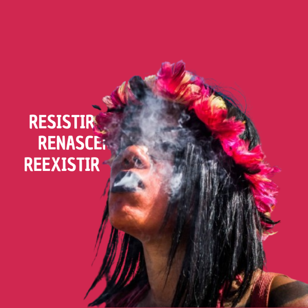

O que é o Acampamento Terra Livre (ATL)?
O Acampamento Terra Livre (ATL) é considerado a maior mobilização indígena do Brasil e ocorre anualmente em Brasília. Organizado pela Articulação dos Povos Indígenas do Brasil (APIB), o ATL reúne milhares de indígenas de diversas etnias para discutir, reivindicar e lutar por seus direitos. O evento se tornou um símbolo de resistência e união, destacando a luta dos povos originários contra as ameaças aos seus territórios, às suas culturas e aos seus modos de vida. É um momento em que as vozes indígenas se fazem ouvir de maneira coletiva e poderosa, exigindo respeito e proteção por parte das autoridades e da sociedade em geral.

Objetivos do ATL
O principal objetivo do ATL é a defesa e a promoção dos direitos dos povos indígenas, com foco na garantia da demarcação de terras, na proteção ambiental e na preservação das culturas tradicionais. Os participantes se reúnem para levantar suas bandeiras contra a invasão e exploração ilegal de suas terras, a destruição ambiental e a falta de reconhecimento de seus direitos constitucionais. Além disso, o evento busca conscientizar a sociedade sobre a importância de respeitar os direitos indígenas e a riqueza cultural que esses povos representam para a identidade nacional. Outro objetivo central é construir alianças e estratégias de resistência contra legislações e políticas que ameaçam os direitos conquistados pelos povos indígenas.